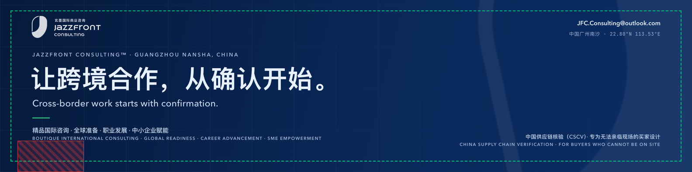
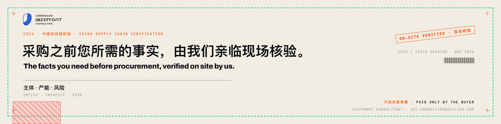
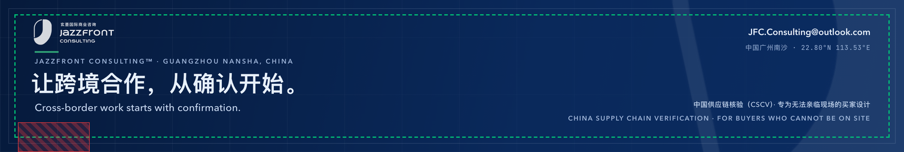
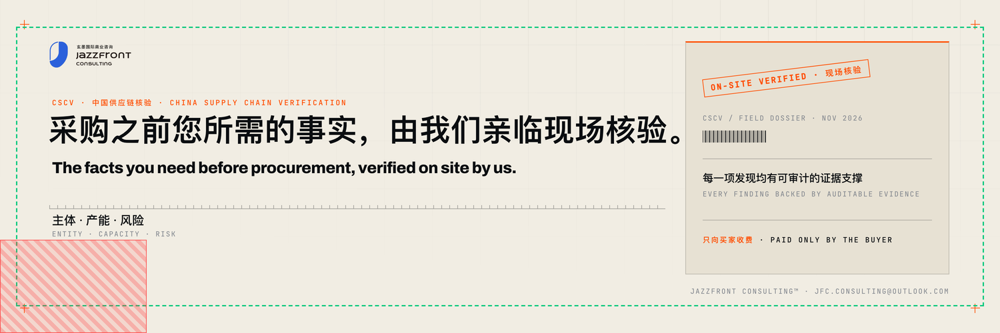
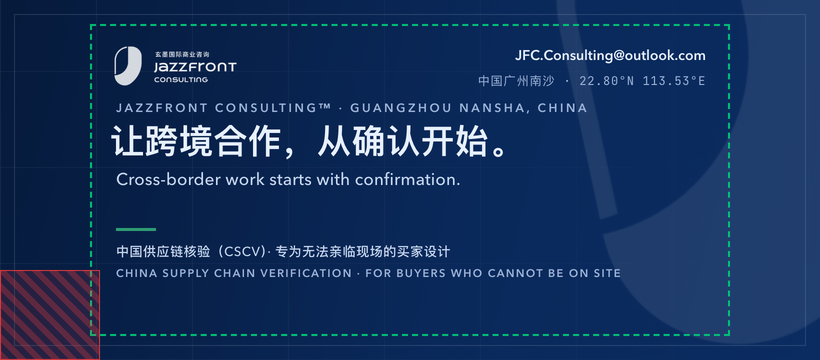
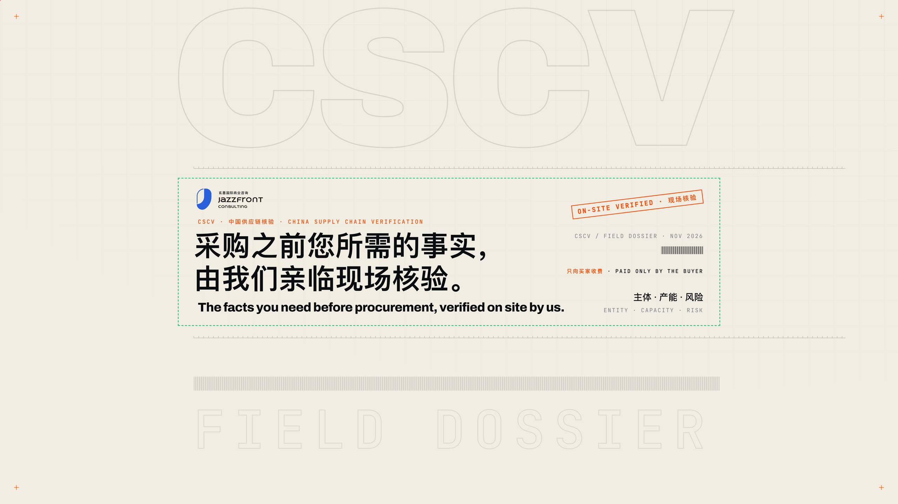

JFC / CSCV 官方社媒背景横幅模板
Official social banner template kit
一套可直接上传的品牌模板：JFC 公司品牌与 CSCV 视觉品牌，覆盖领英（个人主页与公司主页）、X、Facebook、YouTube 五种横幅尺寸。每个尺寸都按平台安全区校验，附可编辑的 HTML 源文件与重新生成脚本。
A ready-to-upload brand kit: the JFC company brand and the CSCV visual brand across five banner formats — LinkedIn (personal profile and company page), X, Facebook and YouTube. Every format is checked against its platform safe area, with editable HTML sources and a regeneration script.
A social profile banner is the most-seen brand surface a company owns. This kit turns JFC’s two brand lines into reusable templates: JFC company brand (Institutional Blue) for company-level and personal profiles, and CSCV visual brand (Field Dossier) for the supply chain verification service. Five platform formats per brand, ten finished PNGs, plus HTML sources, brand rules and build/QA scripts.
五种平台尺寸Five platform formats
格式 Format
平台 Platform
画布 Canvas
要点 Note
linkedin-personal
领英 LinkedIn · 个人主页
1584×396
头像覆盖左下角；内容避开该区域
linkedin-company
领英 LinkedIn · 公司主页
1512×256
官方推荐尺寸；内容居中，避免贴边
x-header
X（Twitter）· 页头
1500×500
头像在左下；顶/底可能轻微裁切
facebook-cover
Facebook · 主页封面
820×360
桌面显示 820×312，手机显示 640×360
youtube-channel
YouTube · 频道封面
2560×1440
所有设备安全区 1546×423，居中
上传方式How to upload
每张成品都在 banners/<品牌>/png/。上传 1× 的 PNG 即可；若平台接受更大图片，可改用同目录的 @2x 版本（更清晰）。不要自行裁切或拉伸——所有构图已按安全区设计。模板只使用品牌色、官方 logo 与冻结文案，不含价格、客户名或未经核实的数字。
Finished files live in banners/<brand>/png/. Upload the 1× PNG; where a platform accepts larger images, use the matching @2x file for sharpness. Do not crop or stretch the artwork — every layout is built to its safe area. The templates use brand colours, the official logo and approved copy only; no prices, client names or unverified numbers.
每张横幅按尺寸取舍文案。在保证可读性的前提下，较小的版式会省略二级文案（如四服务定位仅出现在个人主页与 X 版），品牌主张与 CSCV 服务线在每个版式都保留。详见 banners/*/NOTES.md。 Copy is trimmed per format. To protect legibility, smaller formats omit secondary lines (for example the four-service positioning appears only on the personal profile and X formats) while the brand claim and the CSCV service line remain in every format. Per-format record: banners/*/NOTES.md.
两条品牌线，不要混用。公司层面的主页与个人主页用 JFC 机构蓝；讲核验服务的内容用 CSCV 现场档案。两套系统的 logo 使用规则不同，见后两页。 Two brand lines — do not mix. Company and personal profiles use JFC Institutional Blue; verification-service surfaces use CSCV Field Dossier. The two systems use the logo differently — see the next two pages.
JFC · CSCV Social Banner Kit02 / 07
02 — Brand A / 品牌 A
JFC 公司品牌 · 机构蓝JFC company brand · Institutional Blue
沿用 JFC 公司简介与服务组合的官方视觉：深海军蓝底、冰蓝文字、官方 logo 蓝，一条细绿信号线。字体为 Avenir Next（西文）与 PingFang SC（中文），气质克制、机构化，适合公司主页与对外正式形象。
Follows the official look of the JFC company profile and service portfolio: deep navy field, ice-blue type, official logo blue, a single thin green signal rule. Type is Avenir Next (Latin) and PingFang SC (Chinese). Restrained and institutional — for company pages and formal corporate surfaces.
Navy #0A295B
Navy deep #061A3B
Ice #E7F0FD
Logo blue #2C63E0
Signal green #2E9D74
LinkedIn personal · 1584×396
构成规则Rules
官方白色 logo 置于 navy 底；彩色 logo 只用于浅色背景。Official white lockup on navy; colour lockup on light grounds only.
中文标题为主，英文标题紧随其下成对出现。Chinese headline leads; the English headline sits below as a pair.
绿色只作一条细信号线，≤1 处。Green appears only as one thin signal rule.
不重绘、不拉伸、不旋转 logo；不改品牌色。Never redraw, stretch, rotate or recolour the logo.
不加价格、客户名、奖项或未经证实的数字。No prices, client names, awards or unverified numbers.
排版：标题保持单行；左侧留 70px 以上页边；左下角是头像区域，不要放重要内容。 Layout: keep the headline on one line, at least a 70 px left margin; the bottom-left corner is the avatar zone — never put essential content there.
CSCV is JFC’s China Supply Chain Verification service line. Since November 2026 it uses the Field Dossier system: warm paper, ink type, signal orange, verification green, with registration crosshairs, tick rules, an evidence stamp and barcode. It should read like the cover of an on-site verification dossier, not an advertisement.
Paper #F1EDE3
Ink #0A0D10
Signal orange #FF4D00
Verify #37E08A
Muted / line #7E838B
LinkedIn personal · 1584×396
构成规则Rules
中文在前、英文紧随，成对出现；西文用 Archivo 800 / Inter。Chinese first, English paired below; Archivo 800 / Inter for Latin.
橙色是信号色：以少量点缀为主（不超过 15%），只用于 kicker、印章或一处强调；纸色横幅保持克制。Orange is a signal, kept under 15 % — kicker, stamp or one emphasis; paper covers stay restrained.
十字标记、刻度线、条形码为固定构件，可出血，但不压字。Crosshairs, tick rules and barcode are fixed components; they may bleed but never sit on text.
不用蓝、纯白、渐变、圆角卡片或投影。No blue, pure white, gradients, rounded cards or shadows.
不写价格、认证、保证或“领先/最佳”；73% 等数字不上横幅。No prices, certification, guarantees or “leading/best”; no statistics such as 73 % on a banner.
文案口径：使用 CSCV 服务定义 v2 的事实与 2026-11-26 最新批准的宣传卡文案（Gordon 修订版）：宣传重点为「专为无法亲临现场的买家设计」「每一项发现均有可审计的证据支撑」「只向买家收费」。价格（USD）与报价不上横幅。「只向买家收费」是固定句，不要改写。 Copy: facts from the CSCV Service Definition v2 plus the latest approved card copy (Gordon revision, 2026-11-26): “for buyers who cannot be on site”, “every finding backed by auditable evidence”, “paid only by the buyer”. Prices (USD) do not appear on banners; “Paid only by the buyer” is fixed wording.
JFC · CSCV Social Banner Kit04 / 07
04 — Formats / 尺寸与安全区
五种尺寸与安全区Five formats and their safe areas
绿色虚线为必须可见的安全区（最窄屏幕/裁切下仍完整）；红色斜纹为平台头像或公司 logo 覆盖的区域。所有文字与 logo 都在安全区内、且避开红色区域；网格、十字标记、印章等装饰可以出血。
The green dashed rectangle is the must-stay-visible safe area (it survives the narrowest screen/crop); red hatching marks where the platform avatar or page logo overlays the banner. All text and the logo sit inside the safe area and outside the red zones; grids, crosshairs and stamps may bleed.

linkedin-personal · 1584×396 · JFC

linkedin-personal · 1584×396 · CSCV

linkedin-company · 1512×256 · JFC

x-header · 1500×500 · CSCV

facebook-cover · 820×360 · JFC

youtube-channel · 2560×1440 · CSCV
JFC · CSCV Social Banner Kit05 / 07
05 — Files / 文件与再生成
文件结构、修改与重新生成Files, edits and regeneration
banners/
kit/ # shared system (do not fork)
tokens.py # brand colours + type
copydeck.py # approved bilingual copy
platform_specs.py # canvas + safe areas
css/ # base.css, jfc.css, cscv.css
assets/ # official logo, leaf, OFL fonts
tools/ # render.py, build.py, preview.py
jfc/
src/*.html # editable artboards (1584×396 …)
png/*.png # ready to upload (+ @2x)
NOTES.md
cscv/
src/*.html # editable artboards
png/*.png # ready to upload (+ @2x)
NOTES.md
preview/
contact-sheet.png
mockups/*.png # before / after, platform UI
safe-zones/*.png # green safe area + red blocked
guide/ # this PDF + source
qa/ # build/QA report
改文案Change the copy
先在 banners/kit/copydeck.py 里改批准文案（那是唯一的文案记录），再改对应 HTML 中的文字，最后重新生成。不要只改 PNG。
Edit the approved line in banners/kit/copydeck.py first (that is the copy record), then the matching text in the HTML, then regenerate. Never edit only the PNG.
Each banner is a standalone HTML artboard with absolute positions at the exact canvas size; the renderer uses headless Chromium at 2× and downsamples to the upload size, keeping the @2x file beside it.
重新生成Rebuild
PY=/Library/Frameworks/Python.framework/Versions/3.13/bin/python3
$PY banners/kit/tools/build.py # render all + QA + safe zones
$PY banners/kit/tools/preview.py # mockups + contact sheet
$PY guide/build_guide.py # this PDF
$PY banners/kit/tools/build.py --qa-only
字体与素材授权Fonts and asset licences
素材 Asset
来源 Source
说明 Note
Archivo / Inter / JetBrains Mono
SIL Open Font License 1.1
已随模板内嵌 woff2，可随模板分发
PingFang SC / Avenir Next
macOS 系统字体
不随模板分发；在 Windows 上回退到 Microsoft YaHei / Arial
JFC 官方 logo
JFC 提供
仅用于 JFC/CSCV 官方物料，不重绘、不改色
图片 Photography
本套模板不使用照片
纯文字 + 图形，避免版权与裁切问题
JFC · CSCV Social Banner Kit06 / 07
06 — Use / 使用与验收
上线前检查清单Pre-publish checklist
做Do
按平台选文件：领英公司主页用 1512×256，个人主页用 1584×396。Pick the right file per platform.
上传后在实际设备上预览一次（桌面 + 手机）。Preview on desktop and mobile after upload.
保持中文在上、英文在下；两版内容对等。Chinese first, English paired; equal meaning.
替换文案时保持句式与长度，先改 copydeck 再改 HTML。Keep line lengths; edit copydeck before HTML.
两套品牌线各自成套使用，不混排。Keep each brand set internally consistent.
不做Don't
不拉伸、裁切或重新压缩 PNG。No stretch, crop or re-compression.
不把文字放进安全区外的边缘或头像区。No text outside the safe area or in the avatar zone.
不在横幅上写价格、承诺、认证或客户名。No prices, promises, certifications or client names.
不把 JFC 蓝用进 CSCV 现场档案，或反之。Do not mix JFC blue into CSCV Field Dossier, or vice versa.
All ten banners are exported at the exact platform canvas and pass automated checks: exact dimensions, one artboard with no overflow, critical content inside the safe area and outside platform-UI blocks, no text collisions, required fonts loaded, bilingual pairing, minimum type size. Each was also reviewed visually with the safe-zone overlay and the platform mockup. Full results: qa/report.md and qa/report.json.